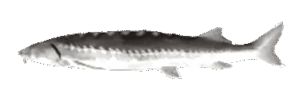
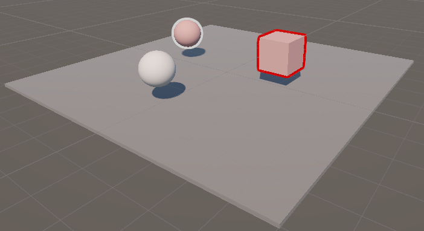

Welcome to Joaquin Niles' portfolio website :3c
I'm a technical artist that focuses on stylized 3D aesthetics
Having gone through the game development and design program, I have been through a multitude of rigorous classes meant to prepare me for industry.
My experience being a technical artist throughout my time at UT and after has allowed me to hone my skills in shader development, creating visual effects, optimizing assets and scenes, tooling, and bridging the gap between art and programming.
Besides working on games, I like working on random stylized scenes that just pop in my head (like the one you're seeing in the background).
Its my philosophy that while realistic graphics have their place within certain games, stylized graphics are one of the big differentiators of games today.
My work reflects this philosophy as all my projects are heavily stylized or are meant to aid people wanting stylized graphics.
Check out my games and projects below
please enjoy your stay
ACTION ADVENTURE PLATFORMER: Banana Cowboy - The Wild Bunch (work in progress)
Betrayed by his friends during a botched train heist, Banana Cowboy reinvents himself as a deputy on the tiny planet of Durian Gap. Life is good out on the galactic frontier… until the past comes knocking. Now, Banana Cowboy races to catch his former comrades before the law can catch him.
(made in unreal engine 5)
Check out the game here: steam page
FIRST PERSON SURVIVAL HORROR GAME: STOMACH
STOMACH is a first-person survival horror cooking game located in a cruise ship with PS1 inspired graphics to capture that retro horror feeling. Your task is to read a food order, search for food ingredients, and make it back safely to the kitchen to cook your ingredients before time runs out.
(made in unity engine)
Check out the game here: steam page
ACTION ADVENTURE PLATFORMER: Banana Cowboy
The original Banana Cowboy game! Play as Banana Cowboy and adventure in fruit-themed universe, rescuing your people from your evil twin who has taken over the Banana Kingdom. Use your trusty lasso and spaceship horse to travel to the Orange Biker and Blueberry Pirate planets and save the universe from the Evil King!
(made in unity engine)
Check out the game here: steam page itch.io page

UNITY RENDER FEATURE: Highlight Selection Outline
A selection outline Unity render feature. For Unity versions 6.0 onwards since they updated their render pipeline. Uses both shadergraph and hlsl code to create a seamless post-processing outline.
Check out the git repo here: github page